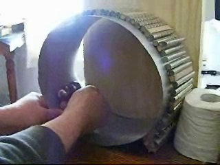
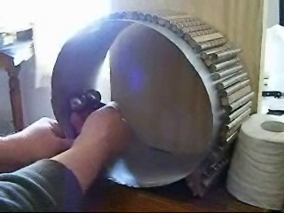
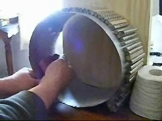
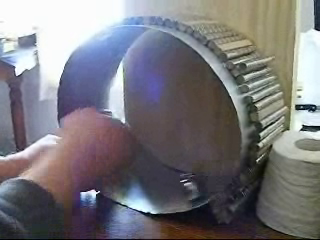
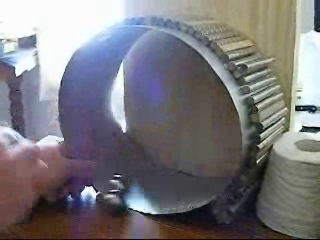

Phase 38 — Non-Linear Asymmetric Magnetic Flux Distance Anomalies. Built and rebuilt a dozen times, and the outcome is always the same: the wall falls. The sticky point breaks. This is not magic and it is not free energy — it is good engineering using two energy forces. Five frames from the Author's bench video, 17 July 2026.





The doctrine, seated 11 September 2026 by the Author's ruling (sitting 960): a magnet is a battery of stored energy — you put electricity into carbon steel and the steel holds it, exactly as a flywheel holds what you spin into it. The track spends stored magnetic energy the way a flywheel spends stored rotational energy. No chemistry is required for something to be a battery, and no chemical battery will ever be quoted at this design as the definition of one.